Diagramm einfügen
Diagramm einfügen
Um ein Diagramm im Präsentationseditor einzufügen:
- Positionieren Sie den Cursor an der Stelle, an der Sie ein Diagramm einfügen möchten.
- Wechseln Sie in der oberen Symbolleiste auf die Registerkarte Einfügen.
- Klicken Sie in der oberen Symbolleiste auf das Symbol Diagramm.
-
Wählen Sie den gewünschten Diagrammtyp aus der Liste der verfügbaren Typen aus:
Spalte
- Gruppierte Säule
- Gestapelte Säulen
- 100% Gestapelte Säule
- Gruppierte 3D-Säule
- Gestapelte 3D-Säule
- 3-D 100% Gestapelte Säule
- 3D-Säule
Linie
- Linie
- Gestapelte Linie
- 100% Gestapelte Linie
- Linie mit Datenpunkten
- Gestapelte Linie mit Datenpunkten
- 100% Gestapelte Linie mit Datenpunkten
- 3D-Linie
Kreis
- Kreis
- Ring
- 3D-Kreis
Balken
- Gruppierte Balken
- Gestapelte Balken
- 100% Gestapelte Balken
- Gruppierte 3D-Balken
- Gestapelte 3D-Balken
- 3-D 100% Gestapelte Balken
Fläche
- Fläche
- Gestapelte Fläche
- 100% Gestapelte Fläche
Kurs
Punkte (XY)
- Punkte
- Punkte mit interpolierten Linien und Datenpunkten
- Punkte mit interpolierten Linien
- Punkte mit geraden Linien und Datenpunkten
- Punkte mit geraden Linien
Radar
- Radar
- Radar mit Markierungen
- Gefülltes Radardiagramm
Verbund
- Gruppierte Säulen — Linie
- Gruppierte Säulen / Linien auf der Sekundärachse
- Gestapelte Flächen / Gruppierte Säulen
- Benutzerdefinierte Kombination
ONLYOFFICE Präsentationseditor unterstützt die folgenden Arten von Diagrammen, die mit Editoren von Drittanbietern erstellt wurden: Pyramide, Balken (Pyramide), horizontale/vertikale Zylinder, horizontale/vertikale Kegel. Sie können die Datei, die ein solches Diagramm enthält, öffnen und sie mit den verfügbaren Diagrammbearbeitungswerkzeugen ändern. Die folgenden Typen werden nur zum Öffnen unterstützt: Histogramm, Wasserfall, Trichter, Explosion.
Sie können Diagrammdaten auch aus dem Tabellenkalkulationseditor einfügen. Klicken Sie beim Einfügen der kopierten Daten auf die Strg-Taste in der unteren rechten Ecke des eingefügten Diagramms:
- Quellformatierung beibehalten und Daten verknüpfen (F) — die ursprüngliche Formatierung bleibt erhalten und die Daten werden mit der Quelldatei verknüpft.
- Quellformatierung beibehalten und Arbeitsmappe einbetten (K) — die ursprüngliche Formatierung bleibt erhalten und das Diagramm wird in die aktuelle Datei eingebettet.
-
Wenn Sie Ihre Auswahl getroffen haben, öffnet sich das Fenster Diagramm bearbeiten und Sie können die gewünschten Daten mithilfe der folgenden Steuerelemente in die Zellen eingeben:
- und — Kopieren und Einfügen der kopierten Daten.
- und — Vorgänge Rückgängig machen und Wiederholen.
- — Einfügen einer Funktion.
- und — Löschen und Hinzufügen von Dezimalstellen.
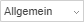
— Zahlenformat ändern, d.h. das Format in dem die eingegebenen Zahlen in den Zellen dargestellt werden.
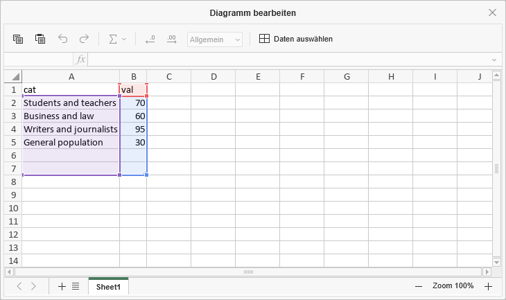
-
Klicken Sie auf die Schaltfläche Daten auswählen im Fenster Diagramm bearbeiten. Das Fenster Diagrammdaten wird geöffnet.
-
Verwenden Sie das Dialogfeld Diagrammdaten, um den Diagrammdatenbereich, Legendeneinträge (Reihen), Horizontale Achsenbeschriftungen (Rubrik) zu verwalten und Zeile/Spalte ändern.
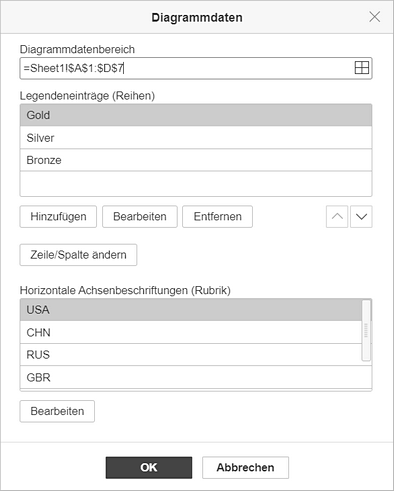
-
Diagrammdatenbereich — wählen Sie Daten für Ihr Diagramm aus.
-
Klicken Sie auf das Symbol rechts neben dem Feld Diagrammdatenbereich, um den Datenbereich auszuwählen.
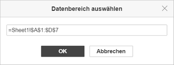
-
Klicken Sie auf das Symbol rechts neben dem Feld Diagrammdatenbereich, um den Datenbereich auszuwählen.
-
Legendeneinträge (Reihen) — Hinzufügen, Bearbeiten oder Entfernen von Legendeneinträgen. Geben Sie den Reihennamen für Legendeneinträge ein oder wählen Sie ihn aus.
- Im Feld Legendeneinträge (Reihen) klicken Sie auf die Schaltfläche Hinzufügen.
-
Im Fenster Datenreihe bearbeiten geben Sie einen neuen Legendeneintrag ein oder klicken Sie auf das Symbol rechts neben dem Feld Reihenname.
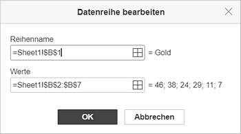
-
Horizontale Achsenbeschriftungen (Rubrik) — den Text für Achsenbeschriftungen ändern.
- Im Feld Horizontale Achsenbeschriftungen (Rubrik) klicken Sie auf Bearbeiten.
-
Im Feld Der Bereich von Achsenbeschriftungen geben Sie die gewünschten Achsenbeschriftungen ein oder klicken Sie auf das Symbol rechts neben dem Feld Der Bereich von Achsenbeschriftungen, um den Datenbereich auszuwählen.

- Zeile/Spalte ändern — ordnen Sie die im Diagramm konfigurierten Arbeitsblattdaten so an, wie Sie sie möchten. Wechseln Sie zu Spalten, um Daten auf einer anderen Achse anzuzeigen.
-
Diagrammdatenbereich — wählen Sie Daten für Ihr Diagramm aus.
- Klicken Sie auf die Schaltfläche OK, um die Änderungen anzuwenden und das Fenster zu schließen.
-
Verwenden Sie das Dialogfeld Diagrammdaten, um den Diagrammdatenbereich, Legendeneinträge (Reihen), Horizontale Achsenbeschriftungen (Rubrik) zu verwalten und Zeile/Spalte ändern.
-
Klicken Sie auf die Schaltfläche Diagrammtyp auf der Registerkarte Diagrammdesign, um Diagrammtyp und -stil auszuwählen. Wählen Sie den Diagrammtyp aus der Liste der verfügbaren Typen aus: Spalte, Linie, Kreis, Balken, Fläche, Kurs, Punkte (XY) oder Verbund.
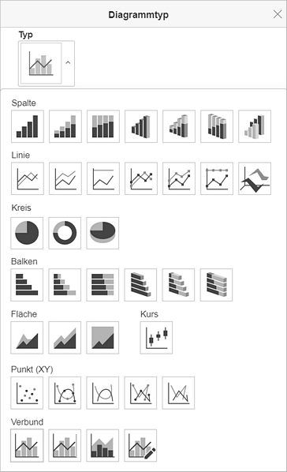
Wenn Sie den Typ Verbund auswählen, listet das Fenster Diagrammtyp die Diagrammreihen auf und ermöglicht die Auswahl der zu kombinierenden Diagrammtypen und die Auswahl von Datenreihen, die auf einer Sekundärachse platziert werden sollen.
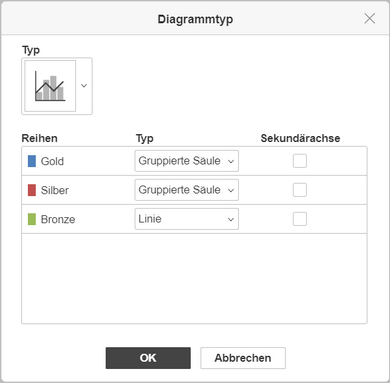
-
Ändern Sie die Diagrammeinstellungen, indem Sie auf die Schaltfläche Erweiterte Einstellungen auf der Registerkarte Diagrammdesign. Das Fenster Diagramme — Erweiterte Einstellungen wird geöffnet.
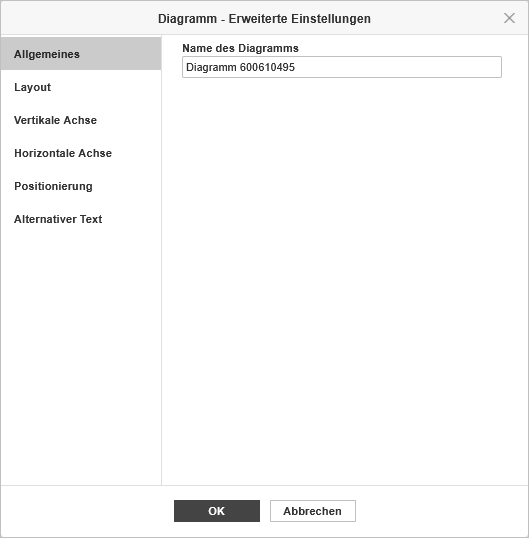
Auf der Registerkarte Allgemeines können Sie den Namen des Diagramms ändern.
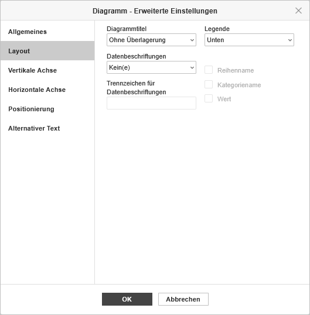
Auf der Registerkarte Layout können Sie das Layout von Diagrammelementen ändern.
-
Wählen Sie die gewünschte Position des Diagrammtitels aus der Dropdown-Liste aus:
- Kein(e) — es wird keine Diagrammbezeichnung angezeigt.
- Überlagerung — der Titel wird zentriert und im Diagrammbereich angezeigt.
- Ohne Überlagerung — der Titel wird über dem Diagramm angezeigt.
-
Wählen Sie die gewünschte Position der Legende aus der Menüliste aus:
- Kein(e) — es wird keine Legende angezeigt
- Unten — die Legende wird unterhalb des Diagramms angezeigt
- Oben — die Legende wird oberhalb des Diagramms angezeigt
- Rechts — die Legende wird rechts vom Diagramm angezeigt
- Links — die Legende wird links vom Diagramm angezeigt
- Überlagerung links — die Legende wird im linken Diagrammbereich mittig dargestellt
- Überlagerung rechts — die Legende wird im rechten Diagrammbereich mittig dargestellt
-
Legen Sie Datenbeschriftungen fest (Titel für genaue Werte von Datenpunkten):
-
Wählen Sie die gewünschte Position der Datenbeschriftungen aus der Menüliste aus: Die verfügbaren Optionen variieren je nach Diagrammtyp.
- Für Spalten-/Balkendiagramme haben Sie die folgenden Optionen: Kein(e), Zentriert, Innen unten, Innen oben, Außen oben.
- Für Linien-/Punktdiagramme (XY)/Strichdarstellungen haben Sie die folgenden Optionen: Kein(e), Zentriert, Links, Rechts, Oben, Unten.
- Für Kreisdiagramme stehen Ihnen folgende Optionen zur Verfügung: Kein(e), Zentriert, An Breite anpassen, Innen oben, Außen oben.
- Für Flächendiagramme sowie für 3D-Diagramme, Spalten-, Linien- und Balkendiagramme, stehen Ihnen folgende Optionen zur Verfügung: Kein(e), Zentriert.
- Wählen Sie die Daten aus, für die Sie eine Bezeichnung erstellen möchten, indem Sie die entsprechenden Felder markieren: Reihenname, Kategorienname, Wert.
- Geben Sie das Zeichen (Komma, Semikolon etc.) in das Feld Trennzeichen für Datenbeschriftungen ein, das Sie zum Trennen der Beschriftungen verwenden möchten.
-
Wählen Sie die gewünschte Position der Datenbeschriftungen aus der Menüliste aus: Die verfügbaren Optionen variieren je nach Diagrammtyp.
- Linien — Einstellen der Linienart für Liniendiagramme/Punktdiagramme (XY). Die folgenden Optionen stehen Ihnen zur Verfügung: Gerade, um gerade Linien zwischen Datenpunkten zu verwenden, glatt, um glatte Kurven zwischen Datenpunkten zu verwenden oder keine, um keine Linien anzuzeigen.
-
Markierungen — über diese Funktion können Sie festlegen, ob die Marker für Liniendiagramme/ Punktdiagramme (XY) angezeigt werden sollen (Kontrollkästchen aktiviert) oder nicht (Kontrollkästchen deaktiviert).
Die Optionen Linien und Marker stehen nur für Liniendiagramme und Punktdiagramme (XY) zur Verfügung.
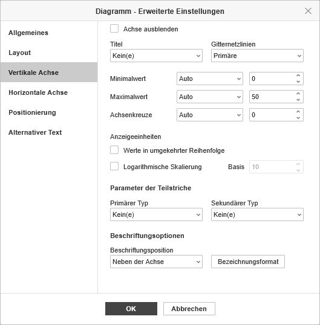
Auf der Registerkarte Vertikale Achse können Sie die Parameter der vertikalen Achse ändern, die auch als Werteachse oder y-Achse bezeichnet wird und numerische Werte anzeigt. Beachten Sie, dass die vertikale Achse die Kategorieachse ist, auf der Textbeschriftungen für die Balkendiagramme angezeigt werden. In diesem Fall entsprechen die Optionen der Registerkarte Vertikale Achse den Optionen, die im nächsten Abschnitt beschrieben werden. Für die Punkte (XY)-Diagramme sind beide Achsen Wertachsen.
Die Abschnitte Achseneinstellungen und Gitternetzlinien werden für Kreisdiagramme deaktiviert, da Diagramme dieses Typs keine Achsen und Gitternetzlinien haben.
- Wählen Sie Achse ausblenden, um die vertikale Achse im Diagramm auszublenden, und lassen Sie das Kontrollkästchen deaktiviert, damit die vertikale Achse angezeigt wird.
-
Geben Sie die Ausrichtung des Titels an und wählen Sie die erforderliche Option aus der Dropdown-Liste aus:
- Kein(e), um keinen vertikalen Achsentitel anzuzeigen,
- Gedreht, um den Titel von unten nach oben links von der vertikalen Achse anzuzeigen.
- Horizontal, um den Titel horizontal links von der vertikalen Achse anzuzeigen.
- Mit Gitternetzlinien können Sie die anzuzeigenden vertikalen Gitternetzlinien festlegen. Wählen Sie dazu die gewünschte Option aus der Dropdown-Liste aus: Kein(e), Primäre, Sekundär oder Primäre und sekundäre.
- Die Option Minimalwert wird verwendet, um den niedrigsten Wert anzugeben, der beim Start der vertikalen Achse angezeigt wird. Die Option Automatisch ist standardmäßig ausgewählt. In diesem Fall wird der Mindestwert abhängig vom ausgewählten Datenbereich automatisch berechnet. Sie können die Option Fixiert aus der Dropdown-Liste auswählen und im Eingabefeld rechts einen anderen Wert angeben.
- Die Option Maximalwert wird verwendet, um den höchsten Wert anzugeben, der am Ende der vertikalen Achse angezeigt wird. Die Option Automatisch ist standardmäßig ausgewählt. In diesem Fall wird der Maximalwert abhängig vom ausgewählten Datenbereich automatisch berechnet. Sie können die Option Fixiert aus der Dropdown-Liste auswählen und im Eingabefeld rechts einen anderen Wert angeben.
- Die Option Achsenkreuze wird verwendet, um einen Punkt auf der vertikalen Achse anzugeben, an dem die horizontale Achse ihn kreuzen soll. Die Option Automatisch ist standardmäßig ausgewählt. In diesem Fall wird der Achsenschnittpunktwert abhängig vom ausgewählten Datenbereich automatisch berechnet. Sie können die Option Wert aus der Dropdown-Liste auswählen und im Eingabefeld rechts einen anderen Wert angeben oder den Achsenschnittpunkt auf den Minimal-/Maximalwert auf der vertikalen Achse setzen.
- Die Option Werte in umgekehrter Reihenfolge wird verwendet, um Werte in die entgegengesetzte Richtung anzuzeigen. Wenn das Kontrollkästchen deaktiviert ist, befindet sich der niedrigste Wert unten und der höchste Wert oben auf der Achse. Wenn das Kontrollkästchen aktiviert ist, werden die Werte von oben nach unten sortiert.
- Die Option Logarithmische Skalierung wird verwendet, um die logarithmische Skalierung auf die vom Benutzer festgelegte Basis zu aktivieren.
-
Im Abschnitt Parameter der Teilstriche können Sie das Erscheinungsbild von Häkchen auf der vertikalen Skala anpassen. Hauptmarkierungen sind die größeren Teilungen, bei denen Beschriftungen numerische Werte anzeigen können. Kleinere Häkchen sind die Skalenunterteilungen, die zwischen den großen Häkchen platziert werden und keine Beschriftungen haben. Häkchen definieren auch, wo Gitternetzlinien angezeigt werden können, wenn die entsprechende Option auf der Registerkarte Layout festgelegt ist. Die Dropdown-Listen Primärer / Sekundärer Typ enthalten die folgenden Platzierungsoptionen:
- Kein(e), um keine Haupt- / Nebenmarkierungen anzuzeigen,
- Kreuz, um auf beiden Seiten der Achse Haupt- / Nebenmarkierungen anzuzeigen.
- In, um Haupt- / Nebenmarkierungen innerhalb der Achse anzuzeigen,
- Außen, um Haupt- / Nebenmarkierungen außerhalb der Achse anzuzeigen.
-
Im Abschnitt Beschriftungsoptionen können Sie das Erscheinungsbild der wichtigsten Häkchenbeschriftungen anpassen, auf denen Werte angezeigt werden. Um eine Beschriftungsposition in Bezug auf die vertikale Achse festzulegen, wählen Sie die erforderliche Option aus der Dropdown-Liste aus:
- Kein(e), um keine Häkchenbeschriftungen anzuzeigen,
- Niedrig, um Markierungsbeschriftungen links vom Plotbereich anzuzeigen.
- Hoch, um Markierungsbeschriftungen rechts vom Plotbereich anzuzeigen.
- Neben der Achse, um Markierungsbezeichnungen neben der Achse anzuzeigen.
-
Um das Bezeichnungsformat anzupassen, klicken Sie auf die Schaltfläche Bezeichnungsformat und wählen Sie den gewünschten Typ aus.
Verfügbare Bezeichnungsformate:
- Allgemein
- Nummer
- Wissenschaftlich
- Rechnungswesen
- Währung
- Datum
- Zeit
- Prozentsatz
- Bruch
- Text
- Benutzerdefiniert
Die Optionen für das Bezeichnungsformat variieren je nach ausgewähltem Typ. Weitere Informationen zum Ändern des Zahlenformats finden Sie auf dieser Seite.
- Aktivieren Sie das Kästchen Mit Quelle verknüpft, um die Formatierung der Zahlen aus der Datenquelle im Diagramm beizubehalten.
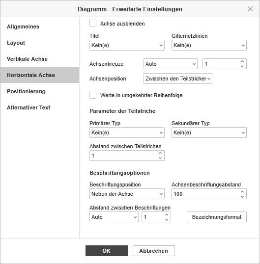
Auf der Registerkarte Horizontale Achse können Sie die Parameter der horizontalen Achse ändern, die auch als Kategorieachse oder x-Achse bezeichnet wird und Textbeschriftungen anzeigt. Beachten Sie, dass die horizontale Achse die Werteachse ist, auf der numerische Werte für die Balkendiagramme angezeigt werden. In diesem Fall entsprechen die Optionen der Registerkarte Horizontale Achse den Optionen im vorherigen Abschnitt. Für die Punkte (XY)-Diagramme sind beide Achsen Wertachsen.
- Wählen Sie Achse ausblenden, um die horizontale Achse im Diagramm auszublenden, und lassen Sie das Kontrollkästchen deaktiviert, damit die horizontale Achse angezeigt wird.
-
Geben Sie die Ausrichtung des Titels an und wählen Sie die erforderliche Option aus der Dropdown-Liste aus:
- Kein(e), um keinen horizontalen Achsentitel anzuzeigen,
- Ohne Überlagerung, um den Titel unterhalb der horizontalen Achse anzuzeigen,
- Die Option Gitternetzlinien wird verwendet, um die anzuzeigenden horizontalen Gitternetzlinien anzugeben, indem die erforderliche Option aus der Dropdown-Liste ausgewählt wird: Kein(e), Primäre, Sekundär oder Primäre und Sekundäre.
- Die Option Achsenkreuze wird verwendet, um einen Punkt auf der horizontalen Achse anzugeben, an dem die vertikale Achse ihn kreuzen soll. Die Option Automatisch ist standardmäßig ausgewählt. In diesem Fall wird der Achsenschnittpunktwert abhängig vom ausgewählten Datenbereich automatisch berechnet. Sie können die Option Wert aus der Dropdown-Liste auswählen und im Eingabefeld rechts einen anderen Wert angeben oder den Achsenschnittpunkt auf den Minimal-/Maximalwert auf der horizontalen Achse setzen.
- Die Option Achsenposition wird verwendet, um anzugeben, wo die Achsentextbeschriftungen platziert werden sollen: Teilstriche oder Zwischen den Teilstrichen.
- Die Option Werte in umgekehrter Reihenfolge wird verwendet, um Werte in die entgegengesetzte Richtung anzuzeigen. Wenn das Kontrollkästchen deaktiviert ist, befindet sich der niedrigste Wert unten und der höchste Wert oben auf der Achse. Wenn das Kontrollkästchen aktiviert ist, werden die Werte von oben nach unten sortiert.
-
Im Abschnitt Parameter der Teilstriche können Sie das Erscheinungsbild von Häkchen auf der horizontalen Skala anpassen. Hauptmarkierungen sind die größeren Teilungen, bei denen Beschriftungen numerische Werte anzeigen können. Kleinere Häkchen sind die Skalenunterteilungen, die zwischen den großen Häkchen platziert werden und keine Beschriftungen haben. Häkchen definieren auch, wo Gitternetzlinien angezeigt werden können, wenn die entsprechende Option auf der Registerkarte Layout festgelegt ist. Die Dropdown-Listen Primärer / Sekundärer Typ enthalten die folgenden Platzierungsoptionen:
- Die Option Primärer/Sekundärer Typ wird verwendet, um die folgenden Platzierungsoptionen anzugeben: Kein(e), um keine primäre/sekundäre Teilstriche anzuzeigen, Kreuz, um primäre/sekundäre Teilstriche auf beiden Seiten der Achse anzuzeigen, In, um primäre/sekundäre Teilstriche innerhalb der Achse anzuzeigen, Außen, um primäre/sekundäre Teilstriche außerhalb der Achse anzuzeigen.
- Die Option Abstand zwischen Teilstrichen wird verwendet, um anzugeben, wie viele Kategorien zwischen zwei benachbarten Teilstrichen angezeigt werden sollen.
-
Im Abschnitt Beschriftungsoptionen können Sie das Erscheinungsbild der wichtigsten Häkchenbeschriftungen anpassen, auf denen Werte angezeigt werden.
- Die Option Beschriftungsposition wird verwendet, um anzugeben, wo die Beschriftungen in Bezug auf die horizontale Achse platziert werden sollen. Wählen Sie die gewünschte Option aus der Dropdown-Liste: Kein(e), um die Beschriftungen nicht anzuzeigen, Niedrig, um Beschriftungen am unteren Rand anzuzeigen, Hoch, um Beschriftungen oben anzuzeigen, Neben der Achse, um Beschriftungen neben der Achse anzuzeigen.
- Die Option Achsenbeschriftungsabstand wird verwendet, um anzugeben, wie eng die Beschriftungen an der Achse platziert werden sollen. Sie können den erforderlichen Wert im Eingabefeld angeben. Je mehr Wert Sie einstellen, desto größer ist der Abstand zwischen Achse und Beschriftung.
- Die Option Abstand zwischen Beschriftungen wird verwendet, um anzugeben, wie oft die Beschriftungen angezeigt werden sollen. Die Option Automatisch ist standardmäßig ausgewählt. In diesem Fall werden Beschriftungen für jede Kategorie angezeigt. Sie können die Option Manuell aus der Dropdown-Liste auswählen und den erforderlichen Wert im Eingabefeld rechts angeben. Geben Sie beispielsweise 2 ein, um Beschriftungen für jede zweite Kategorie usw. anzuzeigen.
-
Um das Bezeichnungsformat anzupassen, klicken Sie auf die Schaltfläche Bezeichnungsformat und wählen Sie den gewünschten Typ aus.
Verfügbare Bezeichnungsformate:
- Allgemein
- Nummer
- Wissenschaftlich
- Rechnungswesen
- Währung
- Datum
- Zeit
- Prozentsatz
- Bruch
- Text
- Benutzerdefiniert
Die Optionen für das Bezeichnungsformat variieren je nach ausgewähltem Typ. Weitere Informationen zum Ändern des Zahlenformats finden Sie auf dieser Seite.
- Aktivieren Sie das Kästchen Mit Quelle verknüpft, um die Formatierung der Zahlen aus der Datenquelle im Diagramm beizubehalten.
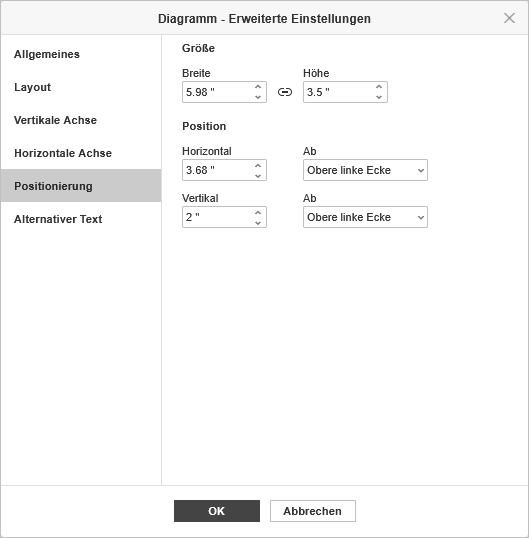
Die Registerkarte Positionierung ermöglicht es, die Größe und Position des Diagramms anzupassen.
- Der Abschnitt Größe enthält die Einstellungen für die Parameter Breite und Höhe des Diagramms. Geben Sie die Werte manuell ein oder verwenden Sie die Pfeile. Klicken Sie auf das Symbol Seitenverhältnis beibehalten, um das Seitenverhältnis beizubehalten.
-
Der Abschnitt Position enthält die folgenden Einstellungen:
- Horizontal — geben Sie den Wert für die horizontale Positionierung manuell ein oder verwenden Sie die Pfeile. Wählen Sie im Feld Ab den Ausgangspunkt: Obere linke Ecke oder Zentriert.
- Vertikal — geben Sie den Wert für die vertikale Positionierung manuell ein oder verwenden Sie die Pfeile. Wählen Sie im Feld Ab den Ausgangspunkt: Obere linke Ecke oder Zentriert.
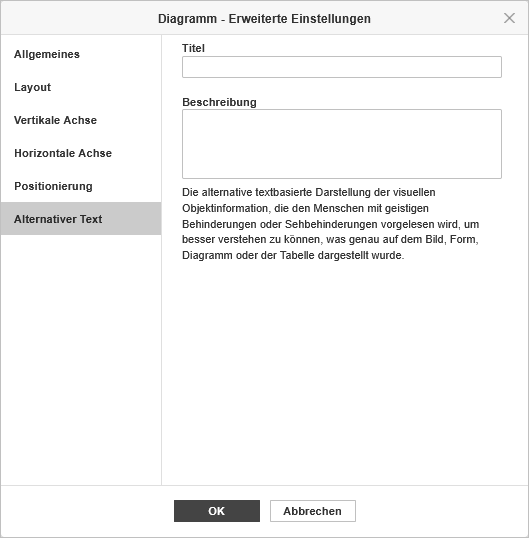
Im Abschnitt Alternativer Text können Sie einen Titel und eine Beschreibung angeben, die Personen mit Seh- oder kognitiven Beeinträchtigungen vorgelesen werden, damit sie besser verstehen, welche Informationen das Diagramm enthält.
Um die Anzeige von Diagrammelementen anzupassen, klicken Sie auf die entsprechende Schaltfläche
 in der oberen rechten Ecke des eingefügten Diagramms und aktivieren/deaktivieren Sie die Elemente, die Sie ein-/ausblenden möchten.
in der oberen rechten Ecke des eingefügten Diagramms und aktivieren/deaktivieren Sie die Elemente, die Sie ein-/ausblenden möchten.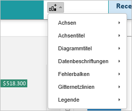
-
Wählen Sie die gewünschte Position des Diagrammtitels aus der Dropdown-Liste aus:
-
Wenn das Diagramm eingefügt ist, können Sie die Größe und Position ändern.
Sie können die Position des Diagramms auf der Folie angeben, indem Sie das Diagram vertikal oder horizontal ziehen.
Sie können einem Textplatzhalter auch ein Diagramm hinzufügen, indem Sie auf das Symbol Diagramm innen drücken und den gewünschten Diagrammtyp auswählen:
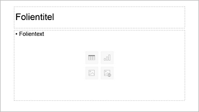
Es ist auch möglich, einem Folienlayout ein Diagramm hinzuzufügen. Weitere Informationen finden Sie hier.
Diagrammelemente bearbeiten
Um den Diagrammtitel zu bearbeiten, wählen Sie den Standardtext mit der Maus aus und geben Sie stattdessen Ihren eigenen Text ein.
Um die Schriftformatierung innerhalb von Textelementen, wie beispielsweise Diagrammtitel, Achsentitel, Legendeneinträge, Datenbeschriftungen usw. zu ändern, wählen Sie das gewünschte Textelement durch Klicken mit der linken Maustaste aus. Wechseln Sie in die Registerkarte Startseite und nutzen Sie die in der Menüleiste angezeigten Symbole, um Schriftart, Schriftform, Schriftgröße oder Schriftfarbe zu bearbeiten.
Wenn das Diagramm ausgewählt ist, ist das Symbol Formeinstellungen auch auf der rechten Seite verfügbar, da die Form als Hintergrund für das Diagramm verwendet wird. Sie können auf dieses Symbol klicken, um die Registerkarte Formeinstellungen in der rechten Seitenleiste zu öffnen und die Formeinstellungen anzupassen: Füllung, Strich und Textumbruch. Beachten Sie, dass Sie den Formtyp nicht ändern können.
Mit der Registerkarte Formeinstellungen auf der rechten Seite können Sie nicht nur den Diagrammbereich selbst anpassen, sondern auch die Diagrammelemente wie Zeichnungsfläche, Datenreihe, Diagrammtitel, Legende usw. und wenden Sie verschiedene Füllungstypen darauf an. Wählen Sie das Diagrammelement aus, indem Sie es mit der linken Maustaste anklicken, und wählen Sie den bevorzugten Füllungstyp aus: Farbfüllung, Füllung mit Farbverlauf, Bild oder Textur, Muster. Geben Sie die Füllparameter an und stellen Sie bei Bedarf die Undurchsichtigkeit ein. Wenn Sie eine vertikale oder horizontale Achse oder Gitternetzlinien auswählen, sind die Stricheinstellungen nur auf der Registerkarte Formeinstellungen verfügbar: Farbe, Größe und Typ. Weitere Einzelheiten zum Arbeiten mit Formfarben, Füllungen und Striche finden Sie auf dieser Seite.
Die Option Schatten anzeigen ist auch auf der Registerkarte Formeinstellungen verfügbar, sie ist jedoch für Diagrammelemente deaktiviert.
Wenn Sie die Größe von Diagrammelementen ändern müssen, klicken Sie mit der linken Maustaste, um das gewünschte Element auszuwählen, und ziehen Sie eines der 8 weißen Quadrate entlang des Umfangs des Elements.
Um die Position des Elements zu ändern, klicken Sie mit der linken Maustaste darauf, vergewissern Sie sich, dass sich Ihr Cursor in geändert hat, halten Sie die linke Maustaste gedrückt und ziehen Sie das Element in die benötigte Position.
Um ein Diagrammelement zu löschen, wählen Sie es mit der linken Maustaste aus und drücken Sie die Taste Entfernen auf Ihrer Tastatur.
Sie können 3D-Diagramme auch mit der Maus drehen. Klicken Sie dazu mit der linken Maustaste in den Diagrammbereich, um ihn auszuwählen, und halten Sie die Maustaste gedrückt. Ziehen Sie den Cursor, ohne die Maustaste loszulassen, um die Ausrichtung des 3D-Diagramms zu ändern.
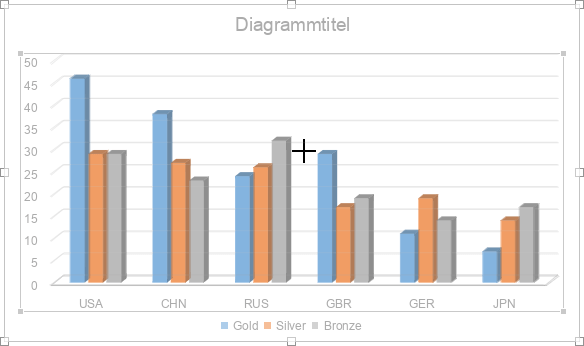
Diagrammeinstellungen anpassen
Wenn ein Diagramm ausgewählt ist, wird die Registerkarte Diagrammdesign in der oberen Symbolleiste verfügbar. Verwenden Sie sie, um das Aussehen und die Einstellungen des Diagramms anzupassen.
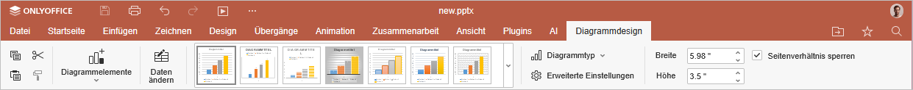
- Diagrammelemente — klicken Sie hier, um einzelne Diagrammelemente ein- oder auszublenden: Diagrammtitel, Datenbeschriftungen und Legende.
- Daten bearbeiten — klicken Sie hier, um das Fenster Diagrammeditor zu öffnen und die Diagrammdaten zu bearbeiten.
- Diagrammdesigns — wählen Sie ein Design aus der Symbolliste aus, um einen vordefinierten Stil auf das Diagramm anzuwenden. Klicken Sie auf den Pfeil, um die Liste zu erweitern und alle verfügbaren Designs anzuzeigen.
-
Diagrammtyp — klicken Sie hier, um den ausgewählten Diagrammtyp und -stil zu ändern.
Wenn Sie Verbundsdiagramme auswählen, werden im Fenster Diagrammtyp die Diagrammreihen aufgelistet. Sie können die zu kombinierenden Diagrammtypen auswählen und festlegen, welche Datenreihen auf einer sekundären Achse dargestellt werden sollen.
- Erweiterte Einstellungen — klicken Sie hier, um das Fenster Diagramm — Erweiterte Einstellungen zu öffnen. Eine detaillierte Beschreibung finden Sie weiter unten.
- Breite und Höhe — verwenden Sie diese Felder, um die Diagrammabmessungen manuell festzulegen.
- Seitenverhältnis sperren — aktivieren Sie diese Option, um die ursprünglichen Proportionen des Diagramms beim Ändern der Größe beizubehalten.
Wenn ein 3D-Diagrammtyp ausgewählt ist, wird auf der Registerkarte Diagrammdesign zusätzlich die Schaltfläche 3D-Drehung angezeigt:
- X-Rotation — stellen Sie den gewünschten Wert für die Drehung der X-Achse mit der Tastatur oder über die Pfeile Links und Rechts nach rechts ein.
- Y-Rotation — stellen Sie den gewünschten Wert für die Drehung der Y-Achse mit der Tastatur oder über die Pfeile Aufwärts und Unten nach rechts ein.
- Perspektive — stellen Sie den gewünschten Wert für die Tiefenrotation mit der Tastatur oder über die Pfeile Blickfeld verengen und Blickfeld verbreitern nach rechts ein.
- Rechtwinklige Achsen — wird verwendet, um die rechtwinklige Achsenansicht einzustellen.
- Autoskalierung — aktivieren Sie dieses Kontrollkästchen, um die Tiefen- und Höhenwerte des Diagramms automatisch zu skalieren, oder deaktivieren Sie dieses Kontrollkästchen, um die Tiefen- und Höhenwerte manuell festzulegen.
- Tiefe (% der Basis) — stellen Sie den gewünschten Tiefenwert mit der Tastatur oder über die Pfeile ein.
- Höhe (% der Basis) — stellen Sie den gewünschten Höhenwert über die Tastatur oder über die Pfeile ein.
- Standardmäßige Drehung — setzen Sie die 3D-Parameter auf ihre Standardwerte.
Bitte beachten Sie, dass Sie nicht jedes Element des Diagramms bearbeiten können. Die Einstellungen werden auf das Diagramm als Ganzes angewendet.
Um das hinzugefügte Diagramm zu löschen, wählen Sie es mit der linken Maustaste aus und drücken Sie die Taste ENTF auf Ihrer Tastatur.
Informationen zum Ausrichten eines Diagramms auf der Folie oder zum Anordnen mehrerer Objekte finden Sie im Abschnitt Objekte auf einer Folie ausrichten und anordnen.